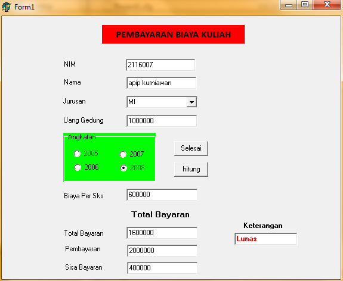

procedure TForm1.ryaClick(Sender: TObject);
begin
eharga.Text := '300';
end;
procedure TForm1.rtidakClick(Sender: TObject);
begin
eharga.Text := '500';
end;
procedure TForm1.bprosesClick(Sender: TObject);
var a,b,c,d,e : real;
begin
a := strtofloat(eharga.Text);
b := strtofloat(ejumlah.Text);
c := a * b;
e := 10/100 * c;
if b > 20 then
d := c - e
else
d := c;
if a = 500 then
d := c
else
d := c - e;
etotal.Text := floattostr(c);
ebayar.Text := floattostr(d);
end;
procedure TForm1.bkeluarClick(Sender: TObject);
begin
Application.Terminate;
end;
end.
ini adalah contoh interfacenya :
procedure TForm1.ComboBox1Change(Sender: TObject);
begin
if combobox1.Text ='Manager' then
edit3.text :='3000000'
else if combobox1.Text ='Operator' then
edit3.Text :='2000000'
end;
procedure TForm1.CheckBox1Click(Sender: TObject);
begin
if checkbox1.Checked then
begin
Edit8.Text :='100000';
end
else
Edit8.Text :='0';
end;
procedure TForm1.CheckBox2Click(Sender: TObject);
begin
if checkbox2.Checked then
begin
Edit9.Text :='200000';
end
else
Edit9.Text :='0';
end;
procedure TForm1.CheckBox3Click(Sender: TObject);
begin
if checkbox3.Checked then
begin
Edit10.Text :='100000';
end
else
Edit10.Text :='0';
end;
procedure TForm1.RadioButton1Click(Sender: TObject);
begin
Edit7.Text := '50000';
end;
procedure TForm1.RadioButton2Click(Sender: TObject);
begin
Edit7.Text := '100000';
end;
procedure TForm1.Button1Click(Sender: TObject);
var gp,ut,keh,pen,kes,ht,bon,tg : Real;
begin
gp := StrToFloat(Edit3.Text);
ut := StrToFloat(Edit4.Text);
keh := StrToFloat(Edit5.Text);
pen := StrToFloat(Edit8.Text);
kes := StrToFloat(Edit9.Text);
ht := StrToFloat(Edit10.Text);
bon := StrToFloat(Edit7.Text);
tg := gp+(ut*keh)+pen+kes+ht+bon;
Edit6.Text := FloatToStr(tg);
end;
procedure TForm1.Edit11Change(Sender: TObject);
var tg,jams,pot : Real;
begin
tg := StrToFloat(Edit6.Text);
pot := StrToFloat(Edit11.Text);
jams := tg * pot/100;
Edit12.Text := FloatToStr(jams);
end;
procedure TForm1.Edit13Change(Sender: TObject);
var tg,jams,pot : Real;
begin
tg := StrToFloat(Edit6.Text);
pot := StrToFloat(Edit13.Text);
jams := tg * pot/100;
Edit14.Text := FloatToStr(jams);
end;
procedure TForm1.Button4Click(Sender: TObject);
var gb,tg,jams,ppn : Real;
begin
tg := StrToFloat(Edit6.Text);
jams := StrToFloat(Edit12.Text);
ppn := StrToFloat(Edit14.Text);
gb := tg-(jams+ppn);
Edit15.Text := FloatToStr(gb);
end;
procedure TForm1.Button2Click(Sender: TObject);
begin
Edit1.Text := '';
Edit2.Text := '';
Edit3.Text := '';
Edit4.Text := '';
Edit5.Text := '';
Edit6.Text := '';
Edit7.Text := '';
Edit8.Text := '';
Edit9.Text := '';
Edit10.Text := '';
Edit15.Text := '';
comboBox1.Text := '';
Edit1.SetFocus;
end;
procedure TForm1.Button3Click(Sender: TObject);
begin
Application.Terminate;
end;
end.
ini adalah contoh interfacenya :
procedure TForm1.cmdisiClick(Sender: TObject);
begin
eitem.Text :='';
efaktur.Text := '';
Lsbarang.Clear;
Lsharga.Clear;
etotal.Text :='';
end;
procedure TForm1.cmdokClick(Sender: TObject);
var
inputnama : string;
inputharga : string;
i : integer;
j : integer;
harga : real;
begin
harga := 0;
j := 0;
j:= strtoint(eitem.Text);
if j <= 0 then
begin
showmessage('Data Tidak boleh lebih kecil dari Nol');
exit;
end else
begin
for i := 1 to j do
begin
inputnama := inputbox('Input','Ketikan Nama Barang','');
inputharga := inputbox('Input','Ketikan Harga Barang','');
Lsbarang.Items.Add(inputnama) ;
Lsharga.Items.Add(inputharga);
harga := harga + strtofloat(inputharga);
end;
end;
etotal.Text := floattostr(harga);
end;
procedure TForm1.FormCreate(Sender: TObject);
begin
DateSeparator := '-';
ShortDateFormat := 'dd/mm/yyyy';
etanggal.Text := 'rabu ' + DateToStr(Date);
end;
procedure TForm1.cmdcloseClick(Sender: TObject);
begin
close;
end;
end.
ini adalah contoh interfacenya :
procedure TForm1.ComboBox1Change(Sender: TObject);
begin
if ComboBox1.Text='MI' then
edit3.Text :='1000000'
else if ComboBox1.Text='KA' then
edit3.Text :='950000'
else
edit3.Text :='0'
end;
procedure TForm1.RadioButton1Click(Sender: TObject);
begin
edit4.Text := '300000'
end;
procedure TForm1.RadioButton2Click(Sender: TObject);
begin
edit4.Text := '400000'
end;
procedure TForm1.RadioButton3Click(Sender: TObject);
begin
edit4.Text := '500000'
end;
procedure TForm1.RadioButton4Click(Sender: TObject);
begin
edit4.Text := '600000'
end;
procedure TForm1.Button2Click(Sender: TObject);
begin
Application.Terminate;
end;
procedure TForm1.Button1Click(Sender: TObject);
var a,b,c : real;
begin
a := strtofloat(edit3.Text);
b := strtofloat(edit4.Text);
c := a + b;
edit5.Text := floattostr(c);
end;
procedure TForm1.Edit6Change(Sender: TObject);
var a,b,c : real;
begin
a := strtofloat(edit6.Text);
b := strtofloat(edit5.Text);
c := a - b;
edit7.Text := floattostr(c);
end;
procedure TForm1.Edit7Change(Sender: TObject);
var a : real;
begin
a := strtofloat(edit7.Text);
if a > 0 then
edit8.text :='Lunas'
else if a < 0 then
edit8.Text := 'Belum Lunas';
if a = 0 then
edit8.text :='Lunas'
end;
end.
ini adalah contoh interfacenya :

procedure TForm1.LsbahasaClick(Sender: TObject);
begin
ebahasa.Text := Lsbahasa.Items[Lsbahasa.ItemIndex];
case Lsbahasa.ItemIndex of
0 : eucap.Text := 'aku cinta padamu';
1 : eucap.Text := 'holong rohangku tuho';
2 : eucap.Text := 'oma sidokhou';
3 : eucap.Text := 'wo ai ni';
4 : eucap.Text := 'i love you';
end;
case Lsbahasa.ItemIndex of
0 : ebahasa.Color := clBlue;
1 : ebahasa.Color := clRed;
2 : ebahasa.Color := clYellow;
3 : ebahasa.Color := clGreen;
4 : ebahasa.Color := clPurple;
end;
end;
procedure TForm1.Button1Click(Sender: TObject);
begin
Application.Terminate;
end;
end.
ini adalah contoh interfacenya :
procedure TForm1.Merah1Click(Sender: TObject);
begin
Form1.Color := clred;
end;
procedure TForm1.Biru2Click(Sender: TObject);
begin
Form1.Color := clblue;
end;
procedure TForm1.Kuning2Click(Sender: TObject);
begin
Form1.Color := clyellow;
end;
procedure TForm1.Hitam2Click(Sender: TObject);
begin
Form1.Color := clblack;
end;
procedure TForm1.KeluarProgram1Click(Sender: TObject);
begin
Application.Terminate;
end;
procedure TForm1.Biru1Click(Sender: TObject);
begin
Form1.Color := clblue;
end;
procedure TForm1.Merah2Click(Sender: TObject);
begin
Form1.Color := clred;
end;
procedure TForm1.Kuning1Click(Sender: TObject);
begin
Form1.Color := clyellow;
end;
procedure TForm1.Hitam1Click(Sender: TObject);
begin
Form1.Color := clblack;
end;
procedure TForm1.Exit1Click(Sender: TObject);
begin
Application.Terminate;
end;
procedure TForm1.Button6Click(Sender: TObject);
begin
Application.Terminate;
end;
procedure TForm1.Button1Click(Sender: TObject);
begin
Form1.Color := clred;
end;
procedure TForm1.Button2Click(Sender: TObject);
begin
Form1.Color := clblue;
end;
procedure TForm1.Button3Click(Sender: TObject);
begin
Form1.Color := clyellow;
end;
procedure TForm1.Button4Click(Sender: TObject);
begin
Form1.Color := clblack;
end;
procedure TForm1.Button5Click(Sender: TObject);
begin
Form1.Color := clbtnface;
end;
end.
ini adalah contoh interfacenya :
procedure TForm1.ComboBox1Change(Sender: TObject);
begin
if combobox1.Text ='N73' then
begin
edit1.text :='Nokia N73';
edit2.Text :='1200000'
end
else
begin
edit1.text :='Nokia N95';
edit2.Text :='1500000'
end
end;
procedure TForm1.RadioButton1Click(Sender: TObject);
begin
If RadioButton1.Checked = true then
edit4.Text :='30000'
end;
procedure TForm1.RadioButton2Click(Sender: TObject);
begin
If RadioButton2.Checked = true then
edit4.Text := '20000'
end;
procedure TForm1.CheckBox1Click(Sender: TObject);
begin
if checkbox1.Checked then
edit3.Text := '25000'
end;
procedure TForm1.CheckBox2Click(Sender: TObject);
begin
if checkbox2.Checked then
edit3.Text := '75000'
end;
procedure TForm1.Edit5Change(Sender: TObject);
var
nilai1:real;
nilai2:real;
nilai3:real;
nilai4:real;
nilai5:real;
begin
nilai1:=strtoint(edit5.text);
nilai2:=strtoint(edit2.text);
nilai3:=strtoint(edit3.text);
nilai4:=strtoint(edit4.text);
nilai5:=(nilai1 * nilai2) + nilai3 + nilai4;
edit6.Text:=floattostr(nilai5);
end;
procedure TForm1.Edit7Change(Sender: TObject);
var
a:real;
b:real;
c:real;
begin
a:=strtoint(edit7.Text);
b:=strtoint(edit6.Text);
c:=a-b;
edit8.Text:=floattostr(c);
end;
procedure TForm1.Button2Click(Sender: TObject);
begin
Application.Terminate;
end;
procedure TForm1.Button1Click(Sender: TObject);
begin
edit8.Text:='';
edit7.Text:='';
combobox1.Text:='';
checkbox1.Checked:=false;
checkbox2.Checked:=false;
radiobutton1.Checked:=false;
radiobutton2.Checked:=false;
end;
procedure TForm1.Button3Click(Sender: TObject);
var
a:real;
b:real;
c:real;
begin
a:=25000;
b:=75000;
c:=a+b;
edit3.Text:=floattostr(c);
end;
end.
ini adalah contoh interfacenya :
Langkah – langkah
1. Membuat folder terlebih dahulu yang nantinya untuk menyimpan aplikasi delphi dan Microsoft accesnya.
• nama folder yang saya buat di sini (data perpustakaan)
• direktori atau tempat penyimpanannya D:\AMIK\pemrograman delphi\data perpustakaan
terserah kalian akan memberi nama foldernya apa dan menyimpan foldernya dimana..
misalkan untuk lebih gampang :
• nama folder (data perpustakaan)
• direktori atau tempat penyimpanannya D:\data perpustakaan
2. Membuat databasenya dengan menggunakan Microsoft acces.
Cara nya :
• Buka Microsoft acces
• Pilih blank desktop database
• Tulis file name misalkan (perpustakaan.accdb)
• simpan pada folder yang sudah anda buat tadi (usahakan satu folder dengan aplikasi delphi nya) lalu pilih create
• Lalu Membuat designnya dengan mengklik kanan pada table pilih design view dan beri judul misalkan (buku).
Seperti gambar di bawah ini.!!
| Field name | Field size |
|---|---|
| Kode | 03 |
| Judul | 20 |
| Penerbit | 20 |
| Pengarang | 20 |
| Tahun_Terbit | 20 |
| Stock | byte |
| Tool | Properties | Nama |
|---|---|---|
| Edit1 | Name | Ekode |
| Edit2 | Name | Ejudul |
| Edit3 | Name | Epenerbit |
| Edit4 | Name | Epengarang |
| Edit5 | Name | Etahun |
| Edit6 | Name | Estock |
| Edit7 | Name | Ecari |
| Button1 | Name | Bcari |
| Caption | Cari | |
| Button2 | Name | Bubah |
| Caption | Ubah | |
| Button3 | Name | Bhapus |
| Caption | Hapus | |
| Button4 | Name | Bsimpan |
| Caption | Simpan |